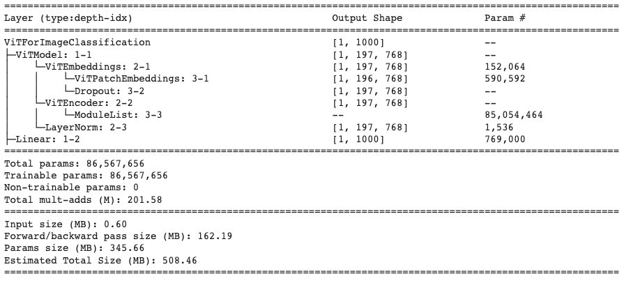
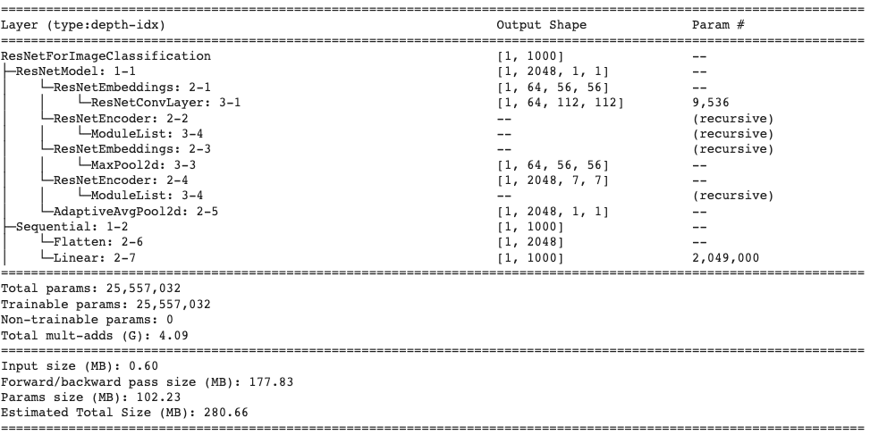

Image classification in the Medical Domain
Top image classification models work well on the major datasets, but how do they perform on CT scans?
Project Progress Report
Concept Review
Vision Transformer Review

The first model that we will review is the newer transformer based architecture that has been explored as a part of image classification and computer vision related tasks. Vision Transformers (ViT) were presented as a new model architecture in [1] as a result of the immense success of Transformers in natural language processing tasks. The main idea that the paper poses is to take the Transformer architecture found in [3] and apply it as simply as possible to image data. To do this, the ViT model proposes that images be split into smaller patches then flattened to patch embeddings. Once this has been done, the sequential data is in a form that fits the structure of a sequential NLP word embedding input. At this point we can pass the position and patch embeddings to the transformer encoder. One difference between the ViT and normal transformers are that the ViT only uses the encoder part of the transformer without the decoder. Instead of using a decoder to recreate or synthesize data, an MLP classification head uses the input of the Transformer Encoder and uses the latent space output of the encoder to classify the image.
ResNet Review

The second model that we will be using as a comparison is one of the best and most widely known CNN architecture ResNet. One of the major problem with deep CNNs is the problem of the vanishing gradients. This is because the gradient in many cases, especially with normalized pixel values, is a value less than 1. When we multiply many of these gradients together, the result is a near 0 decimal at the beginning layers of the network leading to low performance after training. The solution that was proposed was the residual connection block.

Here we see the residual block that add the input to a previous layer to an output of a layer. This results in an output and gradient that is less prone to vanishing gradients because we not only have the activation values but also the input activations from some arbitrary previous layers. This means that the activations are larger leading to less problems of minute gradients. In addition to this, the skip connections provide additional paths for the gradient to travel to any node where the output of the layer was used as part of the skip connection. This leads to exceedingly larger deep networks that perform better than previously expected. These models can lead to longer training time and model size, but the model now has the excess capability to generate even more complex classification spaces for the data it receives during training.
Implementation Overview
Data Details
For our project, as mentioned in our proposal, the data that we are using is from the RSNA 2022 Cervical Spine Fracture Detection competition. This dataset includes approximately 3000 CT scans from various sites that have been collected by the RSNA (Radiological Society of North America). Each study contains approximately 300 slices of the cervical spine taken at >1 mm. These images are provided as a medical imaging field-specific file form (.dcm) and contain metadata about the different aspects of the scan like the type (CT) and where it was taken (Cervical Spine (CS)). For specifics about the size of the image, they are presented as 512x512x3 (H x W x C) images. In some cases, the images have different colors due to the protocol used for grabbing the CT information from the machine. This presents an interesting problem as we still explore ways to best prepare the data for the model. This is something we will go over in the Observation Overview.
Model Details
At the current moment, our experiments have not been run as we have been focusing on EDA for the models, but we are able to provide information about the implementation details that we expect to have for the final result.
ViT Model Details
For the ViT model, we use the Vision Transformer implementation from Hugging Face. Additionally, since we do not want to train a vanilla ViT model, we will be using the pretrained weights from hugging face as well that is provided by Google. This model pre-training was trained on a large scale image classification dataset ImageNet-21k. As a result, the model is quite fine tuned to the task of image classification. Below we present the Pytorch Summary for the model we take from Hugging face which shows the stages and the parameter sizes of the model for 1 input image.

For this model, we will be required to adjust the input images to size (3, 224, 224) as huggingface does not have pre-trained models for images of size 512. Additionally, as we can see based on the parameter size, even with 1 image, we will be required to use about 2.4 GB of GPU memory. This tradeoff may prove to be be significant as we will lose some pixel features in the image for the classification model to learn on.
For the experiment hyperparameters/optimizers, we will use the following:
| Hyperparameter/Optimizer | Value |
|---|---|
| Loss Function | Binary Cross Entropy |
| Learning Rate | 3e-05 |
| Batch Size | 12 |
| Optimizer | Adam |
| Adam Betas | (0.9, 0.999) |
| Adam Epsilon | 1e-08 |
| Epochs | 5 |
| Learning Rate Sceduler | Linear |
ResNet Model Details
Similar to the ViT model, our ResNet implementation is taken from HuggingFace. For this model, we use a pre-trained weight checkpoint provided by Microsoft. There are many variants of the ResNet model with different depths (i.e. 34, 50, 101 convolutional layers), and for this project, we will use ResNet-50 as a medium sized model to allow for a balance between performance and training time. Below we provide the summary for the model that we will be using based on the parameter and
Similar to the ViT, we will resize the CT Scan images to (3,224,224) to allow for reasonable training size rather than keeping the image size 512. This will allow for better comparison between the models as well as reasonable training size and time for the ResNet model.
The model hyperparameters are provided below. The settings for these parameters were inspired by this PyTorch blogpost:
| Hyperparameter/Optimizer | Value |
|---|---|
| Loss Function | Binary Cross Entropy |
| Learning Rate | 0.5 |
| Learning Rate Sceduler | Cosine Annealing |
| Learning Rate Warmup Epochs | 5 |
| Learning Rate Warmup Method | linear |
| Learning Rate Warmup Decay | 0.01 |
| Batch Size | 24 |
| Optimizer | SGD (Stochastic Gradient Descent) |
| SGD Momentum | 0.9 |
| Weight Decay | 2e-05 |
| Epochs | 100 |
One thing that may be noticed is the small batch size. Since we are bound by GPU Memory size, we will chose 12 and 24 as the batch size because we do not want to run out of memory when computing the forward and backwards passes along with updating the parameters. This will allow us to use approximately 6 GB of memory for both models, which we may increase with additional compute resources.
Observations Overview
The bulk of our work between Milestone 1 and Milestone 2 was with our dataset. There is a steep learning curve understanding cervical spine data and how to best represent the spine images to input into our model. Below we will explain the data, our exploration, and our work preprocessing the data thus far.
In the training images, there are 2000 patients each with anywhere from 300 to 600 digital imaging files (.dcm) to train our model. Each image is an axial scan of one of seven possible vertebrae in the cervical spine of the patient, where one of these images shows a fracture at a given vertebrate. We then looked at the training csv file to gain more insights into the distribution of the data. Below we can see that the overall split of the training data is 1058 no fracture and 961 with fracture. We can also see that between the seven different vertebrae, the most common fractures are in C7 and C2.

We reached out to a medical professional to understand the best approach to this problem. He stated that the best view to detect spinal fractures is a sagittal view. Given this information we focused our attention to converting all the axial images given from the dataset to sagittal views. In short, we accessed the DICOM image metadata, added a modality dictionary entry to get a sagittal CT scan into the metadata. Below we are showing one slice of the sagittal view of one patient and showing how we can see how we converted an axial view of a scan to a sagittal view.
Future Plans
References
[1] Dosovitskiy, A., Beyer, L., Kolesnikov, A., Weissenborn, D., Zhai, X., Unterthiner, T. & Houlsby, N. "An image is worth 16x16 words: Transformers for image recognition at scale". arXiv preprint arXiv:2010.11929, 2020.
[2] He, K., Zhang, X., Ren, S., and Sun, J., "Deep Residual Learning for Image Recognition", arXiv preprints arXiv:1512.03385, 2015.
Team Members
Aniket Lachyankar (lachyankar.a@northeastern.edu) and Satwik Kamarthi (kamarthi.s@northeastern.edu)